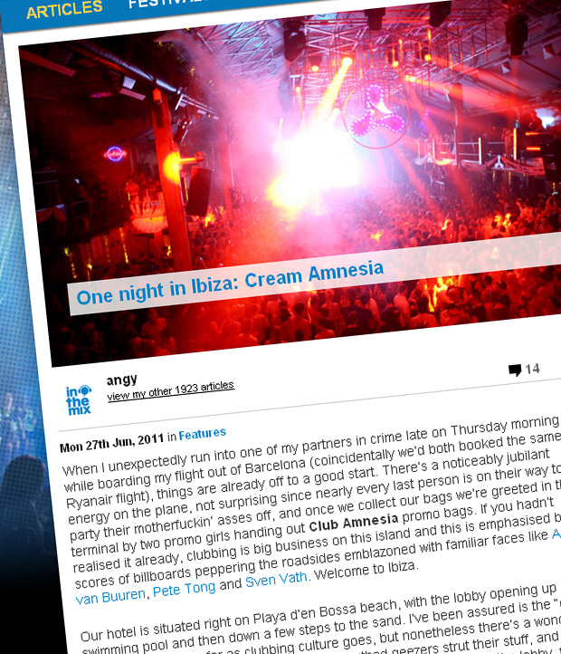
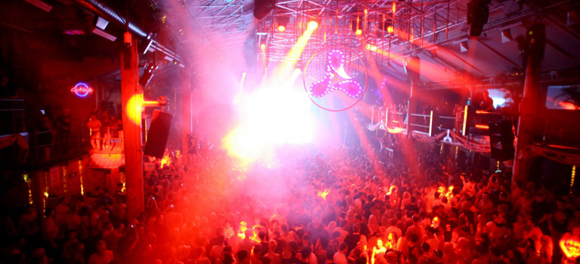

One night in Ibiza: Cream Amnesia
{kind=link}

When I unexpectedly run into one of my partners in crime late on Thursday morning while boarding my flight out of Barcelona (coincidentally we’d both booked the same Ryanair flight), things are already off to a good start. There’s a noticeably jubilant energy on the plane, not surprising since nearly every last person is on their way to party their motherfuckin’ asses off, and once we collect our bags we’re greeted in the terminal by two promo girls handing out Club Amnesia promo bags. If you hadn’t realised it already, clubbing is big business on this island and this is emphasised by the scores of billboards peppering the roadsides emblazoned with familiar faces like Armin van Buuren, Pete Tong and Sven Vath. Welcome to Ibiza.
Our hotel is situated right on Playa d’en Bossa beach, with the lobby opening up into a swimming pool and then down a few steps to the sand. I’ve been assured is the “good” side of the island as far as clubbing culture goes, but nonetheless there’s a wonderful sense of tacky everywhere you look. Loudmouthed geezers strut their stuff, and looking out our window down to the pool we see a camera crew emerge from the lobby, followed shortly by a posse of swimsuit clad travelers bouncing around and whooping it up for the camera. It’s too surreal to even be real, and I’m expecting David Guetta to pop out at any moment, brandishing a shit-eating grin and a member of the Black Eyed Peas.
After squeezing in some beach time, it’s all about the Cream Opening Party at Amnesia. After a quick cab ride everyone is quickly swept into the club with a minimum of fuss and attitude, and once we’re through the alcove it opens up into the most spectacular examples of superclub architecture I’ve ever seen. Venues like Sydney’s Home can be used as a point of reference, but Amnesia is far larger and grander than anything we’ve ever enjoyed in Australia. Sparsely populated at this stage, the aesthetics remind me somewhat of the rooftop of a gothic cathedral – a lot like where Michael Keaton and Jack Nicholson duked it out in the finale of Tim Burton’s Batman – in terms of the grand open spaces, and wooden slats used to build the floors, the walls and the bars. This is classy, and it’s big.
{kind=link}

Looking out over the sprawling open dancefloor that’s circled by several VIP mezzanine platforms, there’s several podiums scattered on the outskirts, countless lights and strobes dotted across the ceiling, and at the front a DJ booth suspended above the crowd and emblazoned with visual screens. To the left of the dancefloor the ceiling drops, and there’s another secondary dancefloor that’s nearly just as big. It’s still just a club at the end of the day, but one that’s been given maximum consideration in terms of ergonomics, space to dance and giving it that “grand” clubbing energy. At the bar at the back of the dancefloor we’re served by possibly the most absurdly beautiful Spanish woman to ever walk the earth, and after ordering two Vodka Red Bulls, two bottles of water and a beer, we’re handed a bill for 87 euros. They do nothing by halves here in Ibiza.
Cream resident Sander van Doorn is on warmup duties from the start of the night, and while we’ve known him as the headliner whenever he’s visited Australia, it’s the perfect opportunity for him to showcase his heralded versatility as a performer. It’s all smooth techno and house grooves early in the evening, nothing too clicky or difficult but also not a hint of any trance melodies during these initial stages. Oxia’s Whole Life booms out over the thumping system as the room begins to fill, and gradually the big synths start to creep in, with the big hooks of Sander’s own recent singles Love Is Darkness and Koko marking the point where the energy steps up a notch.
Walking upstairs to the metallic VIP mezzanine platforms to grab an aerial look at the quickly filling dancefloor, next it’s time to check out the ‘Terrace’ room out the back. The domed metal frame suspended high above the dancefloor is now covered with a transparent roof following the island’s crackdown on open-air spaces. It’s basically a whopping club in and of itself, but god only knows how spectacular it would have looked back in the days when it was a proper Terrace space, and how memorable it would have been to kick on here throughout the day. The DJ is pumping out some noisy, fidgety Dutch house that lacks the class we’re getting from Sander in the main room. Laidback Luke is set to perform later on, but as tantalizing as this is, I’m sucked back into the main room where I remain for the rest of the night.
Here Sander is bringing the trance energy to a peak, and by this stage the dancefloor is absolutely heaving, with manic punters filling every inch of the main floor and sprawling out to cover the rest of the secondary dancefloor too, up on the podiums and punching their fists in the air, sweat and wild abandon everywhere and waves of energy rolling out over the crowd. It’s at this point you notice how “loose” things have quickly become – Ibiza is known as the island of hedonism, but it’s still a surprise to see how quickly the sense of debauchery has tightened its gripped grip on the crowd. Everyone knows exactly why they’re here, and what they’ve come to do. It’s one of the wildest, most unbridled party atmospheres I’ve ever seen, and the punters collectively look like they’re a mere breathe away from collapsing into one giant puddle of sweaty PLUR. It’s a fantasy land utterly removed from the normal everyday lives of everyone gathered here, and it’s where they come to really loosen the reigns and let go.
On the heaving dancefloor up near the front, three Dutch women pull up next us and in typical Netherlands fashion, they’re so gorgeous it’s like you could reach towards them and your hands would pass right through them. It’s their countryman Sander who they’ve come to see, and they’re bouncing up and down and yelping with excitement, but it’s not long before the sweaty male gorillas begin to circle them on the dancefloor. Quickly they scatter, and it’s a similar situation when a sweaty and comically jaw-locked Robbie Williams lookalike clumsily (and persistently) tries to dirty dance with one of the ladies in our posse. Sometimes, even when you travel all the way to the other side of the globe, some things stay exactly the same.
Right on 3AM, and it’s time for the evening’s headliner Paul van Dyk to hit the DJ booth, accompanied by all his laptops, keyboards, samplers and hordes of expensive audio technology, to weave his own unique take on the Cream “musical ethos” – which much like what we’ve heard earlier tonight, is an all-embracing mix of house, electro, techno and trance. PVD grows more varied in his selections with every passing year, with his technology-heavy setup allowing him to sweep breathlessly in a multitude of different directions. The last time I’d seen him was in late 2008 when he’d absolutely walloped the packed crowd at Home in Sydney, and a few months later when he lifted the roof off the massive Jaarbeurs stadium at Trance Energy in Holland, both amongst the most rip-roaringly intense sets I’ve ever seen.
This is the kind of energy the crowd was literally gagging for at this point of the evening, but for some reason he never really lets it shoot into the stratosphere. Every time it climbs into the red zone, he drops it back down again, somewhat frustratingly, and it appears his setup is clashing with the stomping Amnesia sound system for some reason, because it’s too high on the treble and lacking in the bottom end. He’s pulling off all kinds of impressive wizardry with the live edits and mashups, but PVD’s idea of “eclectic” relies a little too heavily on classic anthems on this occasion. There’s Josh Wink’s Higher State of Consciousness, Robert Miles’ Children and a whole lot of Pryda; the clever technical trickery is ever present, but the ratio of old to new is just a little off, and the flow a bit choppy; it’s an extremely clever set, but on this occasion PVD is a little off the mark.
The heaving intensity in the crowd falters just a little, but there’s still a global posse of clubbers having the absolute time of their lives – and not giving a darn what anyone else thinks. Regularly throughout the evening, when a glorious buildup reaches its crescendo and the drop slams in, Amnesia’s famous ice cannons shoot freezing white smoke into the air, and the collective temperatures on the dancefloor literally drop around 20 degrees. In the small alcove behind the front of the dancefloor, there are miniature laser projections that hit the ground in a tiny dot, before expanding out to five little dots that zoom all over the place, before drawing back in to the single laser dot again. Without fail, it succeeds in hypnotizing every last person who unwittingly strolls in there.
Amongst all this dazzling visual silliness, we spot a tall, bulky male clubber at the side of the dancefloor. He’s got his shirt off, a glowstick bandana tied around his head, glowing bracelets on each arm – and he’s still as a post, staring upwards dumbly up at the mezzanine level. Mouth open. Jaw slack. Eyes wide and hypnotized. Not moving an inch. A quick look reveals he’s staring at the rather raunchy Cream dancers on the mezzanine level, who do their best to ignore him, until he begins to flagrantly raise his shirt in the air and shake it at them – it’s emblazoned with the words “Nice Pear” (call on Urban Dictionary if you’re after an explanation). Oh dear, oh dear. All you can do is chuckle, and it’s a moment that captures perfectly the glorious excess and unreality of the night.
When PVD walks away from his keyboards at around 5.30AM, John O’Callaghan steps up to belt out a final selection that jumps smoothly from power trance to hard techno, a little closer to what the crowd needs at this time of the night. When we exit the club an hour later to avoid the last-minute rush for a cab when the venue shuts, we find the security guards out the front effectively trying to herd cats as they push all the stumbling punters into a cab. We’re back at the hotel in time to watch one of those glorious Balearic sunrises on Playa d’en Bossa beach.
The night contrasted interestingly with what I’d experienced just a few days before while watching Marcel Dettmann on the dancefloor of Berlin institution Berghain. That was all about an embrace of creativity and freedom of expression; Ibiza on the other hand is about the debauchery. Beautiful, wonderful debauchery. It’s everywhere right up until reaching the airport at midday, where by the looks of things, everyone thought it would be a good idea to spill straight out of the club and onto a plane. Going by the looks on their faces, it’s a decision they’ve lived to regret. I almost expect a placard above customs as the shattered and exhausted brethren file through into the airport lounge. “YOU ARE NOW LEAVING THE LOOSEST PLACE ON THE PLANET. PLEASE COME AGAIN.” Oh yes, I’ll be back for another round in 2012.